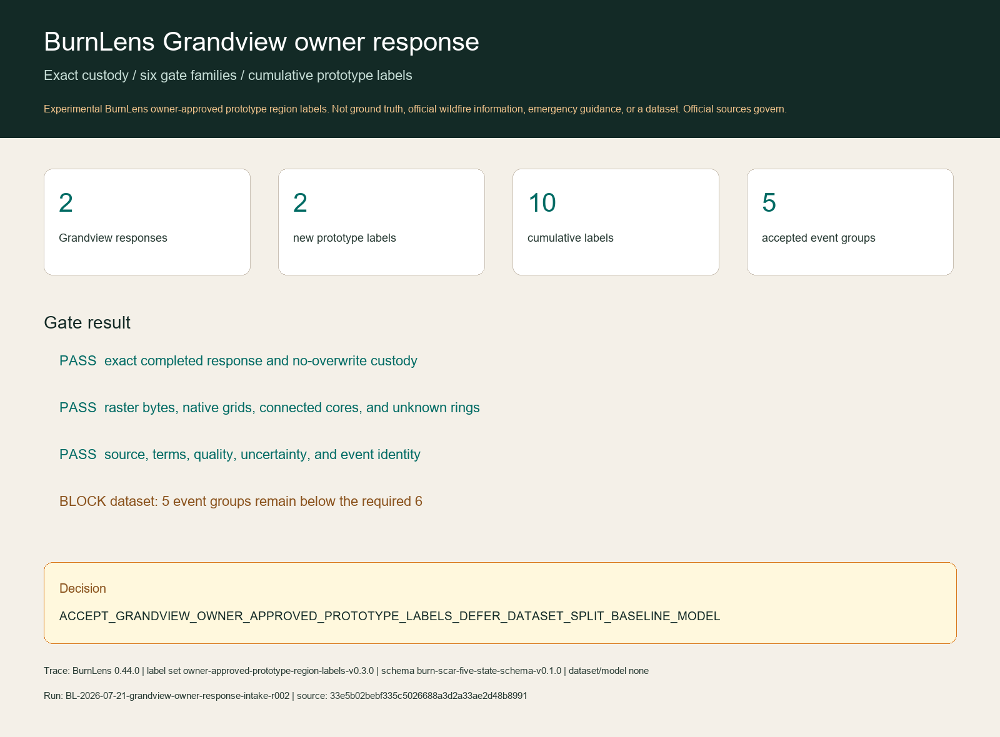

Experimental BurnLens owner-approved prototype region labels. Not ground truth, official wildfire information, emergency guidance, or a dataset. Official sources govern.
Aggregate result
Owner decisions: 2 yes / 0 no / 0 uncertain. Grandview adds 1 burned and 1 background prototype labels.
Every admitted core passes exact-byte reconstruction, source and terms, native-grid quality, explicit uncertainty-ring exclusion, and event-identity gates. Notes and unit decisions remain private.

Sources, roles, and attribution
- Contains modified Copernicus Sentinel data 2021-2022, accessed through CDSE.
- MTBS evidence: Monitoring Trends in Burn Severity Project, U.S. Geological Survey and USDA Forest Service.
- BAER evidence: Burned Area Emergency Response program; delivered unthresholded continuous-change evidence is preliminary/draft context only.
- RAVG evidence: USDA Forest Service and ESA; program-specific timing, vegetation, and model limitations apply. Grandview use is context-only under the delivered sparse/no-tree warning.
Bound source records: SOURCE-2026-024, SOURCE-2026-026, SOURCE-2026-027. Bound terms records: TERMS-2026-020, TERMS-2026-022, TERMS-2026-023.
Why the dataset remains blocked
Only 5 event groups are represented; the frozen count minimum is 6. That count is necessary, not sufficient: class/unknown completeness, regime replication, never-tuned transfer events, and dominance checks still require the separate sufficiency evaluator. No split exists, and no unknown-ring or outside pixel becomes background.
Decision
ACCEPT_GRANDVIEW_OWNER_APPROVED_PROTOTYPE_LABELS_DEFER_DATASET_SPLIT_BASELINE_MODEL
BurnLens 0.44.0 · label set owner-approved-prototype-region-labels-v0.3.0 · schema burn-scar-five-state-schema-v0.1.0 · run BL-2026-07-21-grandview-owner-response-intake-r002 · source 33e5b02bebf335c5026688a3d2a33ae2d48b8991. Dataset, split, baseline, and model remain absent.